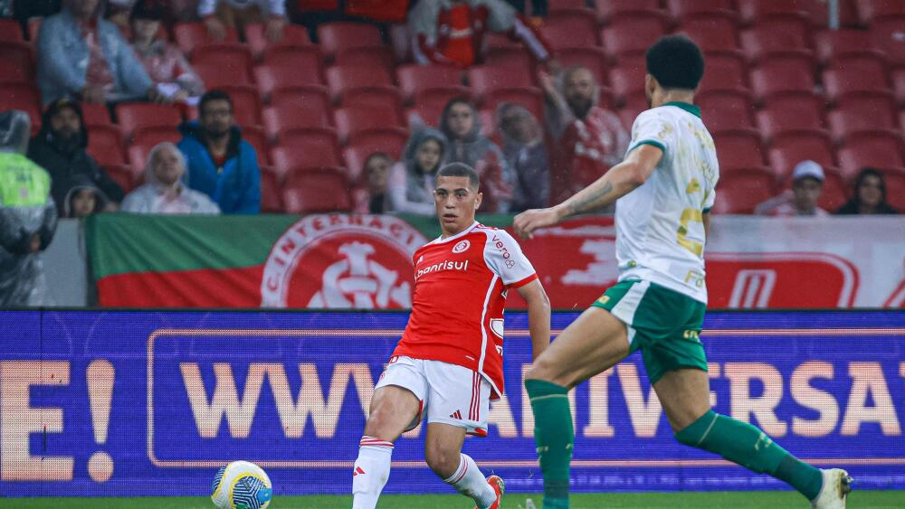

Em clássico marcado por grandes emoções, o Internacional venceu o Grêmio por 2 a 1 no último domingo.
O Internacional empatou com o Palmeiras por 1 a 1 em casa, mantendo-se na parte de cima da tabela.
O Internacional acaba de anunciar o atacante Borre como novo reforço para o ataque para a temporada 2024.
3 títulos
2 títulos
45 títulos
1 título
Data: 15/11 - Internacional vs Atlético Mineiro
Data: 20/11 - Internacional vs Flamengo
Data: 25/11 - Internacional vs Palmeiras
Thiago Gallardo - Posição: Atacante
Rodrigo Moledo - Posição: Zagueiro
Patrick - Posição: Meio-campo
Fundado em 1909, o Sport Clube Internacional é um dos clubes mais tradicionais do futebol brasileiro, conhecido por sua grande torcida e conquistas internacionais, incluindo a Copa Libertadores e o Mundial de Clubes.
O Internacional é conhecido por sua rivalidade histórica com o Grêmio e pelo famoso "Clássico Gauchão". O clube também é um dos mais vitoriosos na história do futebol brasileiro.